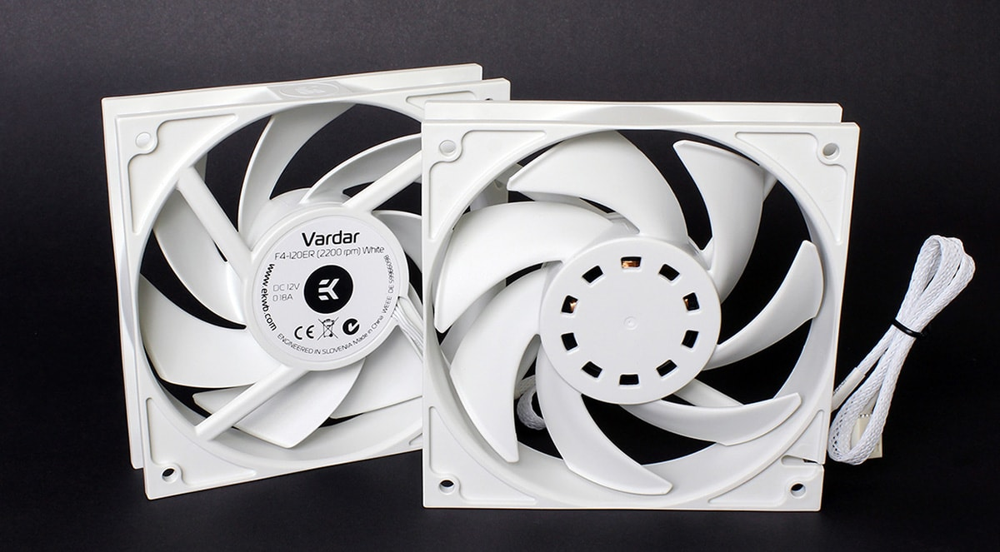

Project 3
HOW TO DESIGN AND BUILD A CUSTOM WATER COOLING LOOP
Table of Contents
- PART 1: LIQUID COOLING BASICS
- PART 2: THE PARTS NEEDED AND THEIR JOBS
- PART 3: OPTIONAL ADDITIONS TO YOUR LOOP
- PART 4: PLANNING YOUR LOOP
- PART 5: ASSEMBLING THE WATER BLOCKS, RESERVOIRS, AND PUMPS
- PART 6: TUBING AND FITTINGS
- PART 7: PUTTING IT ALL TOGETHER
- PART 8: MAINTENANCE AND UPKEEP
- PART 9: ADDITIONAL RESOURCES
Part 1: Liquid Cooling Basics

This particular build is an incredible example of what can be done, and the stunning visual appeal that can be created. The builder custom made a reservoir to highlight the dual nature his loop with two different colored coolants.
Now that we understand how water cooling is more efficient we can talk about its advantages and disadvantages.
| Advantages | Disadvantages |
|---|---|
|
|
Now for the disadvantages. Like every custom project, this will involve time and effort. This is the major hurdle for most people, they just do not understand how it is done or are afraid to break their build. Water cooling will take significant planning, assembly, and maintenance over time, but the results to many are worth it. The other disadvantage is the price. For $20 you can get a fantastic air cooler (such as the Cooler Master Hyper 212 EVO). This is a killer heatsink and will allow you to get some decent overclocks. Water cooling, however, can cost a lot of money once all the parts are purchased, and effectively will only grant you a marginal performance gain.
Now that you understand the concept and are aware of the disadvantages it is time to learn how to actually plan and build your loop.
Part 2: The Parts Needed and Their Jobs

To build a custom loop you will need many parts, in fact you will probably need more parts for your loop than you did for your entire build. First I will start out by listing general categories and then going more in depth.
Water Blocks

Water blocks are the heart of a liquid cooling build, they are what the cooled water is actually pumped through. Water blocks are made for many different parts of the build, but only a few are necessary:
- CPU Blocks- these are the most important as the CPU needs to be cooled the most since it all high end CPUs will not include a cooler and will likely be overclocked the most
- GPU Blocks-Graphics cards produce the most amount of heat, and therefore it may be nice to water cool them. However, if you bought a high end graphics card, it likely already has a great stock cooler and may not need water cooling unless you will be utilizing high overclocks.
- Motherboard Blocks- Motherboards can also be cooled. These water blocks can be sold as all-in-one (full cover) blocks, or as separate blocks. The water cooled parts of a motherboard are the same parts the factory cooling solution covers. This is typically the south bridge (PCH) chip, and the power control (VRM / MOSFETs) modules. Water cooling a motherboard is often more for aesthetic reasons, but can help with thermals.
- RAM Blocks- Memory sticks can also be water cooled, but really do not need to be unless you are trying to achieve very high overclocks, and really it just looks cooler than is really necessary.
- SSD Blocks- SSDs are the last component that is common to be water cooled. This is the least common as it really is unnecessary.
This brings up another advantage to water cooling- the thermal output by each component is less. What this means is that even if a graphics card has a very beefy cooler already and might not need the liquid cooling to keep its thermals under control, water cooling may still be necessary for thermal output concerns. Graphics cards output a lot of heat, especially with air coolers equipped with fans. In a high end build Crossfire of SLI is likely going to be used, and having 3 graphics cards stuck right next to each other means an extremely large c concentration of heat on those chips. Liquid cooling can remove some of the thickness spreading them apart and leaving them room to breath, but also collects the heat into the water instead of the air around the cards.
- EK Waterblocks
- Alphacool
- Swiftech
- XSPC
- Bitspower
- Koolance
Fans/Radiators
The radiator, coupled with its attached fans, is what actually keeps the water cool as it flows through your loop. As the liquid flows through the copper tubing, the radiator fins absorb the heat from the water, then the fins are cooled by the fans attached to the radiator. Radiators come in multiple sizes, usually designed for a certain number of fans. For example, a 120mm radiator holds 1 120mm fan, and a 280mm radiator holds 2 140mm fans. Radiators can come in sizes large enough to accommodate 4 fans. The larger and thicker the radiator, the more effectively it will be able to dissipate heat. The amount of cooling capacity you have is dependent on the amount of radiators you can fit in your case. Make sure to choose a case that can fit the number of radiators you need (use this guide for help). Use this rough guide to determine how many radiators you need (keep in mind that if you have a high end card, or are trying to achieve high overclocks you may want more radiators and fans, some high end builds use a double radiator per device)
- 1 device = 1 fan radiator
- 2 devices = 2 fan radiator
- 3 devices = 3 fan radiator
- 4 devices = 4 fan radiator
- 5+ devices = larger than 4 fans, or use multiple radiators

CFM vs. Static Pressure
Another consideration is the fans, and the FPI (fin per inch) measurement on the radiator. The higher the FPI the more dense the radiator fins are, and the more static pressure is needed. This brings us to types of fans. There are two types of fans, those optimized for air flow (volume of air a fan can move, measured in CFM) and static pressure. Fans optimized for air flow are measured for the amount of air a fan can move when no obstacles are in the way This is why static pressure fans are so important. Static pressure fans are slightly different and are designed to overpower obstacles, such as the fins on a radiator. Air flow optimized fans can be used for water cooling, but only for radiators with a low fin density. For radiators with high fin density you need static pressure fans, as described below:- Emphasize cooling performance and opt for the largest, highest fin density radiator allowable. Pair it with high static pressure fans. Generally, 120mm fans push more air than 140mm fans, but look at the Pa measurements however for exact values
- Emphasize lower noise levels by selecting a lower fin density radiator. Use medium airflow fans, or use a fan controller or PWM fans to slow down high airflow ones (look here on a guide to PWM fans). Generally, 140mm fans are quieter than 120mm fans.
Pumps

Text
Text
Text
Text
Text
Text
Text
Text
Text
Text
Text
Text
Text
Reservoirs

Text
Text
Text
Text
Text
Text
Text
Text
Text
Text
Tubing
Soft Tubing
Soft tubing is made out of norprene, rubber, silicone, and PVC most often. It comes in clear, and colored variants variants; and you can even get UV reactive tubing. The quality of tubing matters as the lower quality tubing can become discolored and yellow, or loose its transparency. One problem with soft tubing is that it can kink with tight bends, but anti-kink cables can rectify this. Soft tubing is nice to use, and better for those first building a loop. The reason is that it is flexible, and easy to bend, as well as easy to cut. You can just hold it up to the fittings you want to connect, and then cut it to that length. While soft tubing is easy to install, it doesn't have the same clean look that you get from hard, straight tubing.
Hard Tubing
Hard tubing is usually made of acrylic (plexi glass) or PETG (polyethylene terephthalate). Hard tubing is harder to use, as you need careful consideration for every tube. Hard tubing needs to be measured out exactly, and bent using a heat gun precisely. If you bend the tube incorrectly it can look messy, or not fit the run you are trying to tube. You can also use right angle fittings if you do not want to bend the tube. Another form of hard tubing is copper tubing. This can be painted, and has a different look than clear PETG or acrylic tubing, although it is more difficult to work with and bend. Hard tubing offers a clean and aesthetically pleasing look, which is why you will see it more in high end builds.
Tubing Measurements
- 10/13mm
- 10/16mm
- 12/16mm
- 13/19mm
- 3/8”-1/2”
- 3/8”-5/8”
- 7/16”-5/8”
- 1/2”-3/4”
Coolant
Text
Text
Text
Text
Text
Text
Text
Text
Text
Text
Text
Text
Fittings
Text
Text
Text
Text
Text
Text
Text
Text
Text
Text
Text
Text
Part 3: Optional Additions to Your Loop

Part 4: Planning your loop
Part 5: Assembling the water blocks, reservoirs, and pumps
Part 6: Tubing and fittings
Part 7: Putting it all together
Part 8: Maintenance and Upkeep
Part 9: Additional Resources
Here is a collection of resources I found extremely useful in building my own loop, and may help you as well:
- EK Loop Configurator
- EK Water cooling guides Here and Here
- Toms Hardware Guide
- PC Gamer Guide